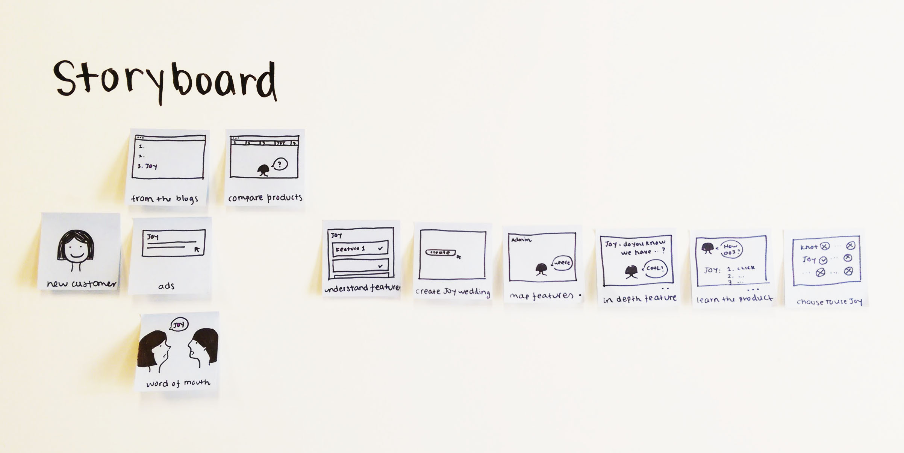

WHAT IS JOY?
Joy is a part of the Y Combinator Summer 2016 Batch.
So far, Joy has built a virtual home for weddings, a website and an app, that allows couples to manage all wedding planning details all in one place. In the long run, Joy wants to build a virtual bridesmaid that helps with every stage of wedding planning.
WHAT I DID AT JOY
I worked part time in spring at Seattle, full time in summer at Silcon Valley.
During my time in YC, Joy's acquisition grew from 150 weddings a month to 150 weddings a day, and the retention grew by 47.8%. I owned 20+ projects to improve the overall experience of the product on both web and app platform.
MAIN PROJECTS
Admin Guest Management
This project is more than a design problem, but also a business problem. We want to build the best guest management system in the entire wedding industy.
Admin To Do List
Project “To Do List” is an initial conceptual exploration of an AI assistant called Joy. “To Do List” itself is an onboarding experience where Joy helps you to set up the most important 6 things you need to do in Joy.
FINAL DESIGNS
Admin Guest Management
Dimensional columns to separate the ideas between grouping and tagging.
Keep track of your guest list progress in a glance.
Editor feature to offset outside influences.
Different views for different functions.
Visually show households and +1s and enable smoother transition between print and digital media.
Admin To Do List
Introduction to dashboard and show how to add pages.
Include your fiance as editor at one tap.
Add important pages such as RSVP.
How Joy looks when it is not activated.
DESIGN PROCESSES
My design processes include conducting research to determine problem statements, storyboarding to divide the big flow into chunks, sketching for ideation, team presentations to receive feedbacks and creating wireframes and mockups to finalize the experience.
Guest Management: Sketches
Official round one sketch - first ideas of different views but overcomplicated.

Round two sketch - idea of steps and further exploration of views.
Guest Management: Wireframes
Round one wireframe - the "shell" is too bulky.

Round two wireframe - solidify the big picture.

To Do List: Storyboard
Understanding the user flow. Break it down for ideation.
To Do List: Sketches
Force myself to sketch a lot. Let my ideas flow.
Official round one sketch for team presentation.
To Do List: Team Presentation
Present my work to entire team for feedbacks. I really enjoyed the sun out there ☺

To Do List: Wireframes
First "too pretty" wireframe.

Go back to most basic. Settle down the flow.

MOTION DESIGN
I did a little motion explorations in both Principal and After Effects for various projects. But because of lack of engineering resources, none of them got implemented which is kind of sad. However, it is my first real world experience with motion design!
WHAT I LEARNED
System thinking: how to deliver the best designs in a fast-paced environment
Design in the real world actually makes an impact and it is part of the experience of a product. I not only need to know the scope of the project itself, but also understand how this project fits in the product as well as the short-term and long-term company goals.
Detach from my design: be ready to kill my baby
Priorities shift all the time and it is normal to ditch a design I have already worked for weeks on. Therefore, I learned to participate in the conversations and sometimes decide on what to be prioritized during standups and meetings.
Ask for feedbacks in the right way
I learn to be explicit on what exactly I am asking for feedbacks and always come in prepared. That is how I can advocate for my design when needed and filter out the most important insights I need to iterate on next. I also learned that bringing in the right fidelity of the design is also very crucial.
Why I design the way I design
I do not think there is a formula for design process. I believe that the it is important to have a deep understanding about what is core of the design and focus on spending the 20% of my time to achieve the 80% of the results. Therefore, I only do what I need to do to get the best results and cut out processes that are unnecessary.